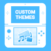

Welcome to the official 3DS Homebrew Launcher website ! This page is meant to be a hub between all the best and newest ways to get homebrew running on your system.
If you want to see homebrew in action, check out
this video !
What is homebrew ?
Homebrew is what we call unofficial software made by amateur developers for closed systems such as the 3DS. This includes both games and applications, and in practice getting homebrew on your 3DS means you'll be able to :
 Play Aperture Science 3D, a free adaptation of Portal for the 3DS. Play Aperture Science 3D, a free adaptation of Portal for the 3DS. |
Play out-of-region games you own. |
|  Make your own themes to use in home menu. |
Play old SNES games with blargSNES. |
How do I get homebrew running on my console ?
Getting homebrew on your 3DS has never been easier ! All you need is one or more of the following titles and a bit of patience. Select the one(s) you have below to get instructions :
 |
Web Browser |
If your 3DS is on a compatible version, you can use the stock web browser to get homebrew running ! Head over to
yellows8's browserhax page and follow instructions there.
Much like tubehax, ironhax requires that your console be on a firmware version between 9.0 and 10.1, and that you have IronFall (previously available for free on the eShop) installed on it.
Unlike tubehax and ninjhax however, IronFall is not "self-sufficient" : you will need either tubehax or ninjhax to perform the initial ironhax install. The advantage of ironhax is that unlike tubehax, it only requires an internet connection the first time; after that, you'll be free to use it untethered !
- First go down to the "preparing your SD card" section and follow those steps, then come back. Don't worry, we'll wait for you !
NOTE : the following steps might be slightly confusing to some people. If you find you're not sure what the steps are referring to, please just head over to the Youtube video showing them being executed here.
- Run IronFall at least once before continuing. No need to play it (though it certainly doesn't hurt !), but you have to run it at least up to the main menu.
- Setup an initial way to run homebrew on your system, such as tubehax or ninjhax. If you installed ninjhax a while ago, please uninstall it and reinstall it ! Your version might be outdated; installing ironhax requires ninjhax 2.1 or more recent.
- Download the ironhax installer. If you downloaded the Homebrew Starter Kit below, you should already have it !
- Run the ironhax installer and follow the instructions on screen. Make sure your 3DS is connected to the internet for the install !
- Reboot your 3DS and open IronFall. Select the save slot that says "ironhax" and press A. The Homebrew Launcher will start !
 |
Cubic Ninja |
If you own a copy of Cubic Ninja (and don't plan on selling it for massive profits), please head over to
the ninjhax website and follow instructions there.
| |
Super Smash Bros (or demo) |
If you own Super Smash Bros (or the free demo), a New 3DS, some compatible wifi hardware and aren't afraid of going under the hood, then you can head over to
yellows8's smashbroshax webpage and follow instructions there. Do note that this is currently the least convenient method of running homebrew, and will likely be best suited to installing a more permanent setup such as ironhax (see above).
 |
YouTube |
NOTE : unfortunately Nintendo has patched tubehax and made it impossible to use the YouTube application without updating. tubehax is dead, long live browserhax.
In order to install tubehax, you will need a console whose firmware version is between 9.0 and 10.1, as well as the YouTube application (available for free on eShop) and an internet connection.
- First go down to the "preparing your SD card" section and follow those steps, then come back. Don't worry, we'll wait for you !
NOTE : the following steps might be slightly confusing to some people. If you find you're not sure what the steps are referring to, please just head over to the Youtube video showing them being executed here.
- On your 3DS, open the System Settings app, then go to Internet Settings and Connection Settings. From there, select your favorite Connection, tap the Change Settings button, and on the second page head over to the DNS section. Once there, select "No" for "Auto-obtain DNS", and under Detailed Setup, enter the following address : 107.211.140.065.
- Save these new settings and close the System Settings app.
- Open the YouTube app. It should redirect you to a firmware selection page.
- Under "Select your firmware version", choose your console's firmware version. Getting this right is very important ! Once you're sure you did it right, hit the Submit button.
- Wait for a few seconds. If you did all the previous steps right, the exploit should run and the Homebrew Launcher should load up !
The source code for tubehax can be found
on github.
Preparing your SD card
In order for homebrew to run on your system, you will need to place a few files on your SD card :
- boot.3dsx : this file should be placed at the root of your SD card. It's what ninjhax/ironhax/tubehax will run first ! Usually, this is the Homebrew Launcher.
- 3ds/ : this folder will contain all the homebrew applications you want to install to your system. You can either place 3DSX files directly inside of that folder, or create an individual folder for each application you install.
To make things easier, we put together the
homebrew starter kit; you can just download it and extract it at the root of your SD card. Alternatively, you may choose to only download
The Homebrew Launcher menu executable and place it at the root of your SD card.
No matter what, you should have a file named boot.3dsx placed at the root of your SD card.
Frequently Asked Questions
> Where can I find more homebrew applications ?
You can visit 3dbrew for more homebrew applications.
> I set up tubehax and I can no longer access the eShop. What's going on ?
tubehax works by redirecting your DNS requests to a server that will make your console think that youtube.com is another server. In addition to this, our DNS server blocks requests to Nintendo's eShop and update servers by default, meaning that as long as you have the tubehax DNS set up, you will not be able to access the eShop or update your console. You can restore access to the eShop (temporarily or permanently) by switching the DNS back to its original settings. If there is enough demand, we may consider setting up another DNS server for tubehax which does not block traffic to Nintendo's servers.
> Can ironhax be uninstalled ?
Yes. Simply select the ironhax savegame slot in the IronFall main menu, and delete it !
> Can tubehax be uninstalled ?
Yes. tubehax is never actually installed to your system; all you need to do to disable it is reset the DNS in your internet connection settings to what it originally was.
> What are 3DSX files ? Why doesn't the homebrew launcher load CXIs ?
We made the decision early on that the homebrew launcher should only work with a highly relocatable executable format as a way to improve compatibility with potential future exploits (such as ironhax and tubehax), which may or may not include the ability to update virtual memory page permissions. 3DSX is a format developed by fincs which allows us to do just that; each section (.text, rodata and data) can be relocated independently, making it perfect for our needs. Compiling as 3DSX rather than CXI will help maximize future compatibility.
> Does this allow region free ?
It totally does and it's pretty rad. You can access the region free feature directly from the Homebrew Launcher; it's the first option in the list, can't miss it. For more information on the region free feature, please visit regionFOUR's README page, as the exact same limitations currently apply.
> Does this let me run roms ?
No. These exploits run strictly in userland, meaning that we do not have full control over the console, and therefore cannot run pirated software. That being said, we have the same amount of access as regular apps and games to the console's hardware, and so we can make some kickass homebrew!
Credits
Most of the code for ninjhax, ironhax and tubehax was written by smea. Everything pertaining to smashbroshax and browserhax was made by yellows8. The vulnerability used for homemenuhax was discovered by yellows8 and exploited jointly by yellows8 and smea. In any case a lot of help was provided by the following people :
- yellows8
- plutoo
- mtheall
- fincs
- Fluto, Arkhandar (hbmenu design)
- Normmatt, ichfly
- lobo (webpage template)
- CUE (compression code)
- GW (bringing attention to the webkit bug used by tubehax)
- derlanalmeida, ThibG (icons on this page)
We'd all also like to thank everyone who has been contributing to the 3DS scene in one way or another, including (but not limited to) : yuriks, Subv, Bond697, sm, StapleButter, bunnei, WinterMute, neobrain, and, like, so many other people.